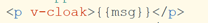
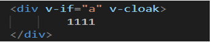
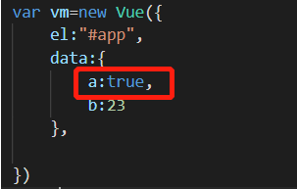
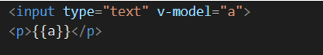
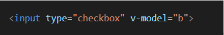
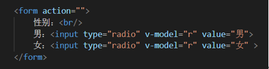
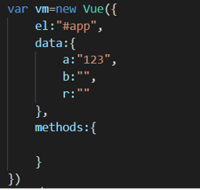
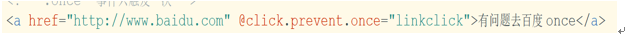

在学习vue之前，我们应了解一下什么是vue.js？
什么是Vue.js?
Vue.js是目前最后一个前端框架，React是最流行的一个前端框架（react除了开发网站，还可以开发手机App，Vue语法也是可以进行手机App，还需要借助 weex）
Vue.js是前端的主流框架之一，和angular、react.js一起，并成为前端三大主流框架
Vue.js是一套构建用户界面的框架，只关注视图层，它不仅易于上手，还便于第三方库即有项目整合（Vue有配置的第三方类库，可以整合起来做大型项目的开发）
前端的主要工作：主要负责MVC中的V这一层，主要工作就是和界面打交道，来制作页面效果
Node（后端）中的mvc与前端mvvm之间的区别：
mvc是后端的分层开发概念
mvvm是前端视图层的概念，主要关注于视图层分离，也就是说：mvvm把前端的视图层，分为三部分：model，view，vm viewmodel
Vue
vue返回的是一个对象
vue是一个mvvm的框架，（面试官常问的），angular是mvc的框架
Vue是vue的实例，这个实例存在计算机中，主要干俩大事：1、绑定事件；2、dom检测
Vuejs是封装的一个类，参数是options对象
Vue全家桶包括：vuex、vue-router、vue-resource还有构建工具 vue-cli
但是vue-resource 现在不使用了，用的是axios
最常用的属性是：
el:"" 指定vue所操作的dom范围，属性值是你获取的节点
data 就是vue的model，是存放数据的，属性值是一个对象或者是一个函数，在组件中的data是一个函数
methods 是vue中的事件方法，
vue的基本内容：
Vue的渲染：
指令式渲染：
v-html，v-text 采用{{}}语法==>插值运算
v-html：它可以加标签，它会解析成html
v-text：不能加标签，如果加了，它会当作字符串展示出来
插值表达式：
{{ data中的数据 }}
v-text与插值表达式的区别：
默认v-text没有闪烁的问题的，而插值表达式有闪烁问题
v-text 会覆盖元素中原本的内容，但是插值表达式只会替换自己的这个占位符，不会把整个元素的内容清空
v-html 与 v-text的区别：
v-html会解析html格式
v-text与插值表达式会把内容当做文本来解析
v-html 和 v-text都会覆盖元素中原有的内容
v-cloak
v-cloak 能够解决 插值表达式闪烁的问题

并在css中设置：
[v-cloak]{
display: none;
}
让所有设置 v-cloak 的元素隐藏，当加载完毕之后，元素身上的 v-cloak 就会消失
条件指令：v-if
v-if="a"
后面的值如果是true节点就显示，false就隐藏
 
v-show=""
改变css中的display
后面的值如果是true，节点就显示，false就隐藏
v-if与v-show的区别：
v-if是对节点的删除和添加，v-show是堆display属性值none和block的切换
v-if与v-show的区别及使用场景：
共同点：都是动态显示DOM元素
不同点：
v-if：
v-if 是动态的向DOM树内添加或删除DOM元素
v-if 切换一个局部编译/卸载的过程，切换时合适销毁和重建内部事件监听和子组件
v-if是懒惰性的，初始条件 = false，什么也不做，只有在条件第一次 = true时，才开始局部编译
v-show 是在任何条件下（首次条件是否为着真）都会被编译，然后缓存，而且DOM元素保留
v-if有更高的切换消耗
使用场景：
v-if 适合运营条件不大可能改变
v-show
v-show有更高的初始化渲染消耗
v-show只是简单的基于css切换
v-show是通过设置DOM元素的display实现控制显隐的
使用场景：
v-show 适合频繁切换
循环指令：v-for=""
* 值是一个数组 (item,index) in 数组名
* 值是一个对象 (value,key) in 对象名 value是属性值，key是属性
v-for 循环的时候，key属性只能使用 number 或string，且是惟一的
key在使用的时候，必须使用 v-bind 属性绑定的形式，指定key的值
动态属性：v-bind:class="a"
可以简写 :class="a" v-bind可以省略
节点上绑定事件：
v-on:click="fn" 可简写：@click="fn"
事件方法写在methods中
v-on 监听事件
v-on:click="事件名"
缩写@click="事件名"
v-model 数据绑定
可以在表单中使用v-model实现数据双向绑定
text类型中的文本都是字符串，v-model中的值相同

复选框 v-model中的值是boolean

单选框 v-model中值是value


v-model实现的原理：
angular是mvc模式，ng-model是靠脏值检测
vue靠的是数据劫持和发布者订阅者模式
数据劫持：
Object.definePropery() 这个方法
* 生成对象的方法 字面量 var obj={}/new Object()
* Object.definePropery() 给一个对象定义新属性或修改一个对象的属性
* object.getOwnPropertyDescriptor() 返回关于一个对象某个属性的描述符，
第一个参数是目标对象，第二个参数是 对象的某个属性
var obj={age:12}
console.log(object.getOwnPropertyDescriptor(obj,'age'))
返回属性的意思：
configurable 配置选项，值为true代表这个属性可删除
enumerable 值为true 代表可枚举 可以使用 for in 遍历
value 这个属性的值
writeable 代表这个属性可以更改
如果有了set和get属性就不能有writeable 和 value属性
常见的修饰符：
.lazy v-model 在每次 input 事件触发后将输入框的值与数据进行同步
<input v-model.lazy="msg" >
.number 自动将用户的输入值转为数值类型
<input v-model.number="age" type="number">
.trim 自动过滤用户输入的首尾空白字符
<input v-model.trim="msg">
vue的事件修饰符
vue.js为 v-on 提供了事件修饰符
.stop 阻止maop
.prevent 阻止默认事件
.captur 添加事件监听器时使用事件捕获模式
.self 只当事件在该元素本身（比如不是子元素）触发是触发回调
.once 事件值触发一次
事件修饰符是可以串联的：

.stop和.self的区别：
.stop阻止事件冒泡
.self只会阻止自己身上冒泡行为的触发，并不会真正阻止 冒泡行为